Website in the new font set
Old Standard for headlines, Atkinson Hyperlegible Next for everything you read or press, Spline Sans Mono for commands. Layout, colors, words and pictures are the tidied site, unchanged.
Left is the tidied site in its current fonts (Instrument Serif, Inter, JetBrains Mono). Right is the same site with the three fonts swapped. Click an image for full size. This page is set in the new fonts too.
What changed besides the font names
- Headlines are one step smaller. Old Standard is wider than Instrument Serif, so the largest headline is 54px, not 60, and second-level headings are 38px, not 42. Tracking stays tight (−3.5% and −2.5%), and line breaks are balanced.
- No serif under 24px. The wave names inside the team window ("Runs", "Evals", "Machines") were 18px serif; they are 16px Atkinson semibold. The italic serif line under each docs title is Atkinson, upright.
- Nothing else. Sizes, spacing and colors are the same steps as before.
Hero

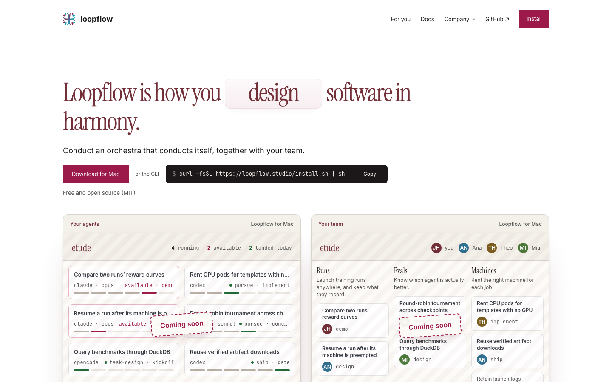

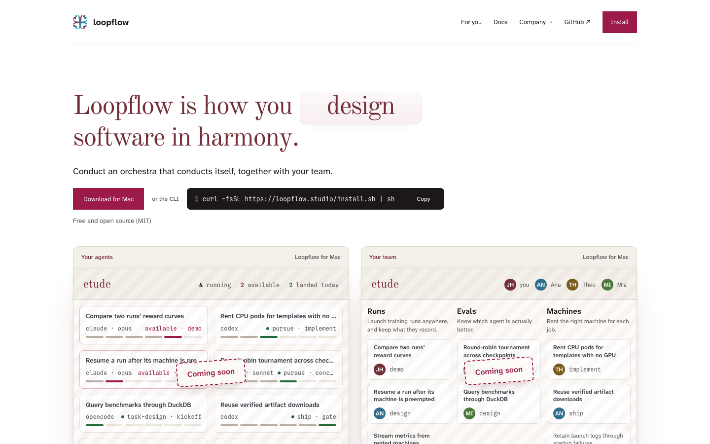
Waves and tasks


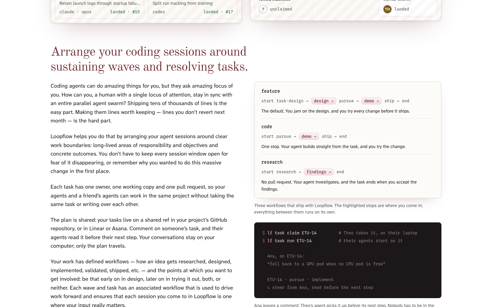
The CLI

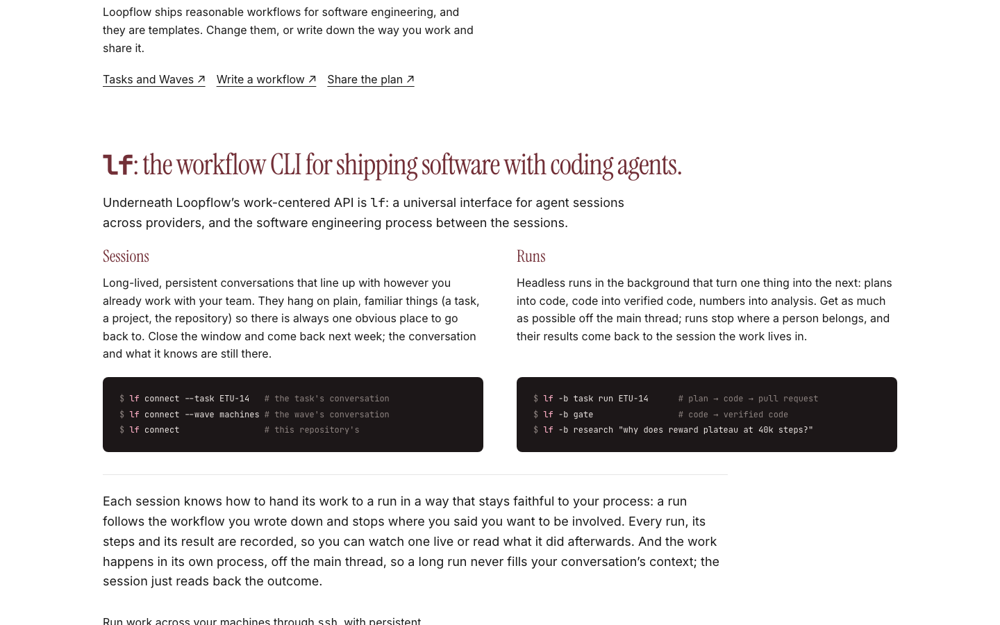

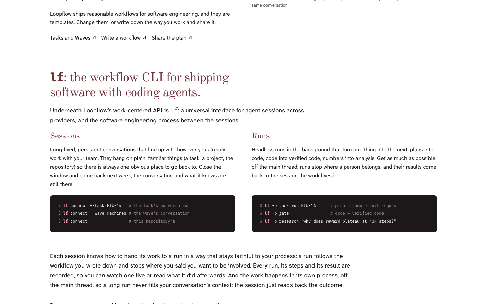
Works with and the close

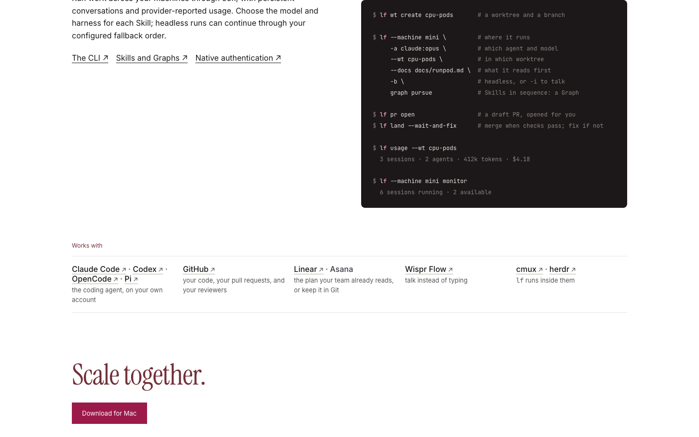

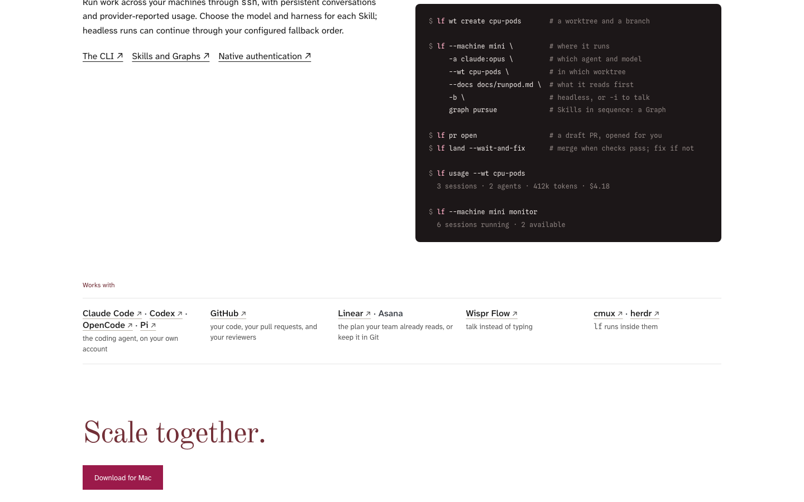
Studio page


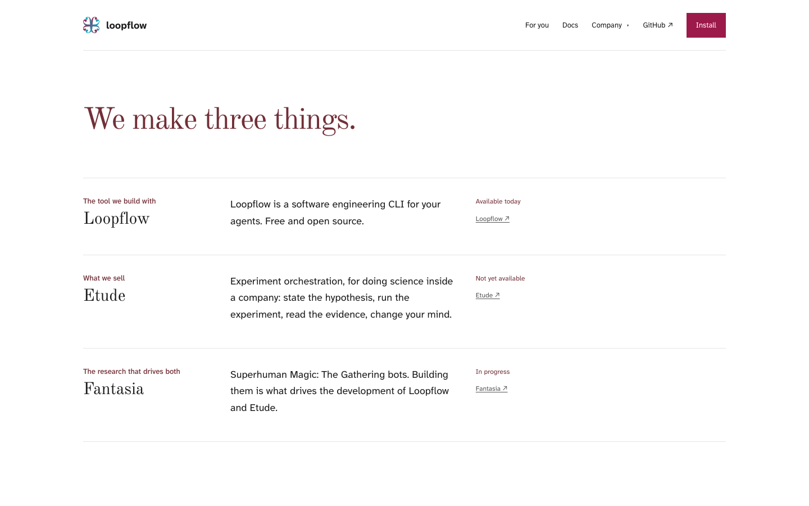
Docs

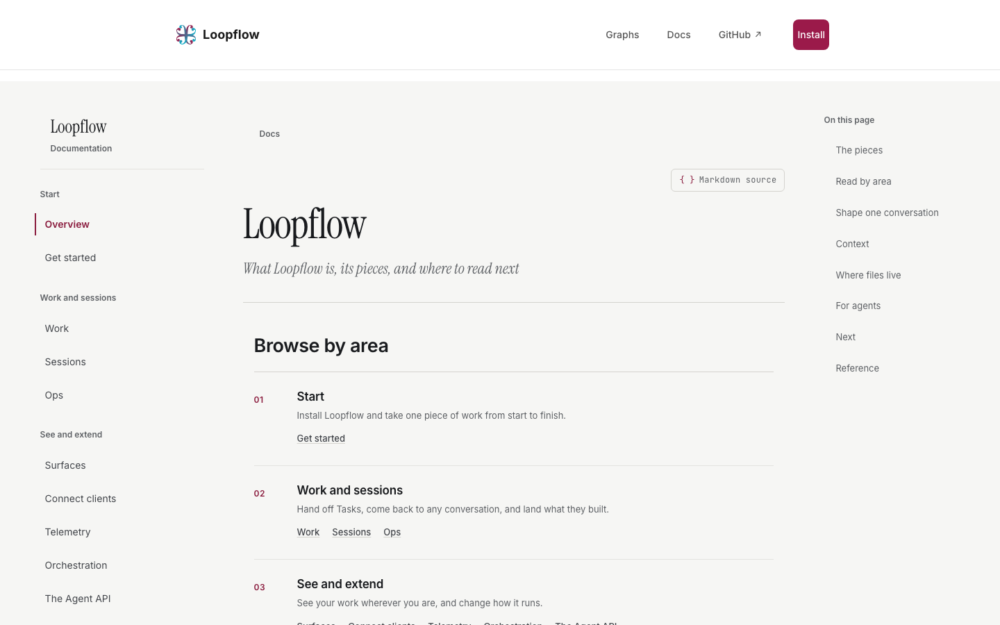

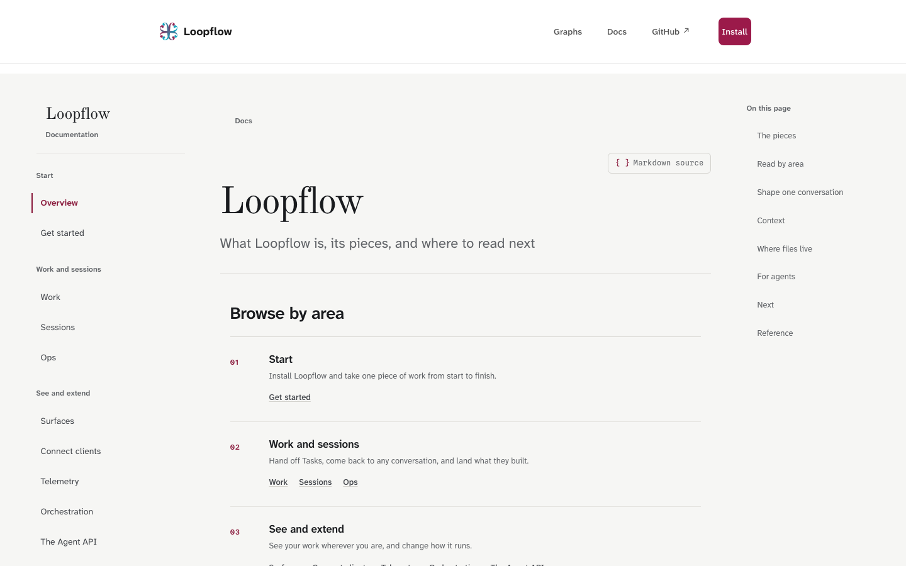
Download page

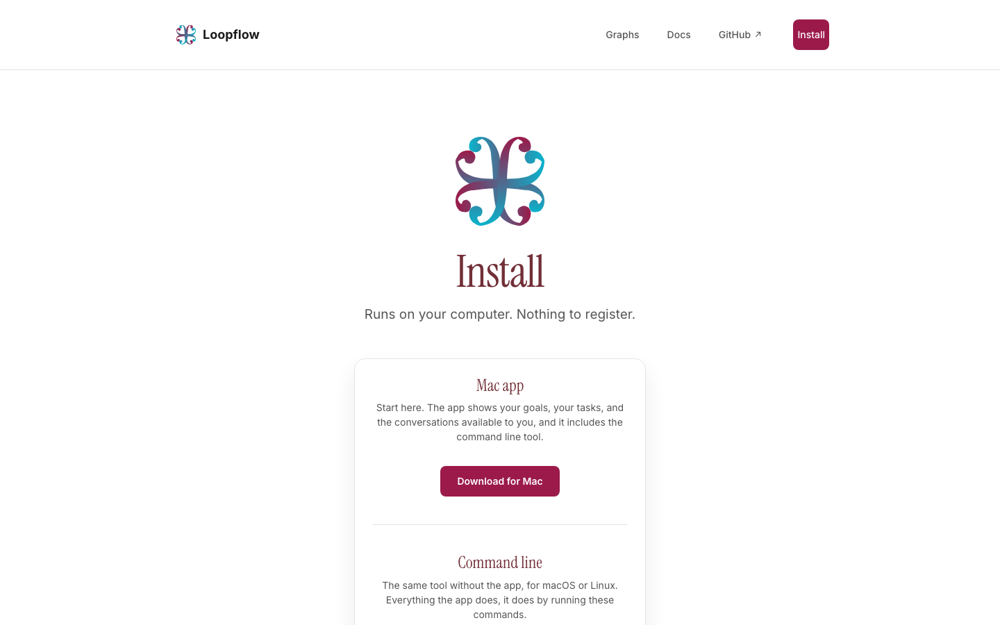

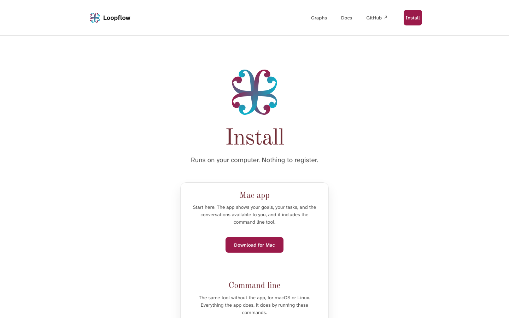
Phone

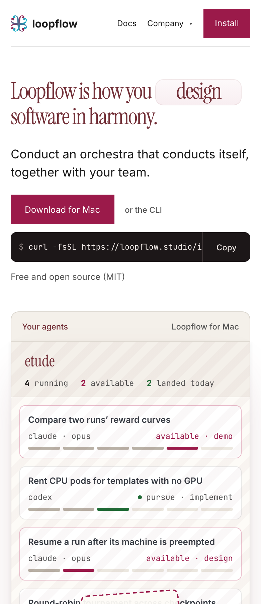

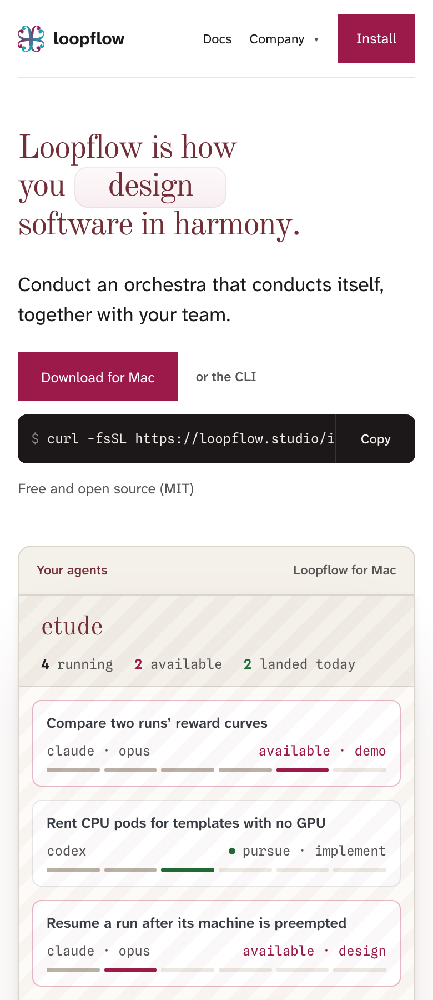